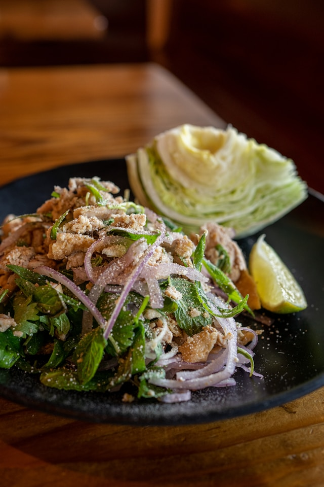

Larb Gai

Description
This Thai larb gai is the best! Boiling the ground chicken or turkey instead of stir frying it keeps it moist and helps the meat absorb all the beautiful flavors.
This salad can be served hot or cold with any type of lettuce, greens, or rice. This is my hairstylist's mom's secret recipe.
Ingredients
- 2 lemons, juiced
- 1 lime, juiced
- 2 tablespoons fish sauce, or more to taste
- 1 tablespoon rice vinegar
- 1 teaspoon white sugar
- 1 teaspoon cayenne pepper
- 1 teaspoon lemon zest
- 1 pound ground chicken or turkey
- 1 clove garlic, minced
- 1 cup water to cover
- ½ red onion, thinly sliced
- 1 carrot, shredded
- ½ cup coarsely chopped chestnuts
- 3 Thai chile peppers, sliced
- 3 green onions, sliced
- ¼ cup chopped fresh mint
- ⅓ cup chopped fresh Thai basil
- 2 tablespoons chopped fresh cilantro
- 3 tablespoons toasted rice powder
- 2 tablespoons Thai chile flakes
Steps
- Gather all ingredients.
- To make the dressing: Whisk lemon juice, lime juice, fish sauce, rice vinegar, sugar, cayenne, and lemon zest together in a bowl until dressing is smooth.
- Spread ground turkey or chicken in a thin layer in a large skillet; add garlic. Pour enough water into the skillet to cover the ground meat; bring to a boil. Cook and stir, breaking the meat apart with a fork, until browned and crumbly, 7 to 10 minutes.
- Drain liquid and transfer ground meat to a large glass bowl.
- Stir red onion, carrot, chestnuts, Thai chile peppers, green onions, mint, basil, and cilantro into the bowl until well combined. Refrigerate mixture until chilled, about 30 minutes.
- Sprinkle rice powder and Thai chile flakes over salad mixture and mix well.
Home